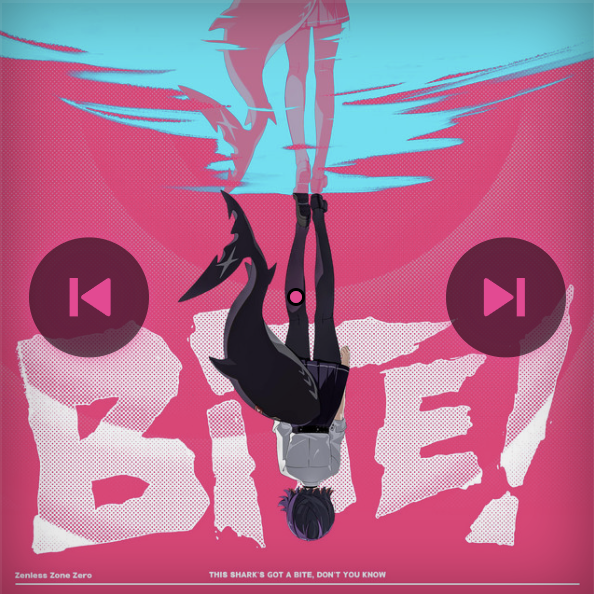
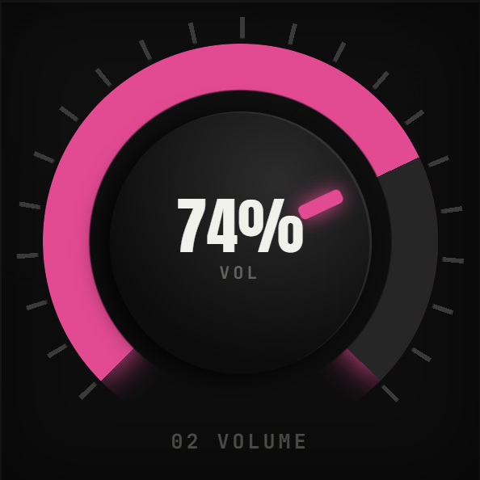
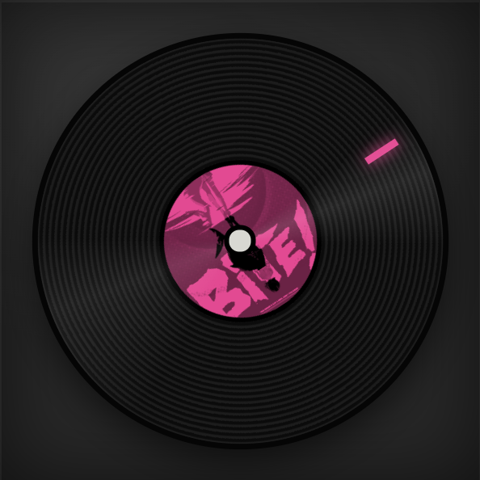
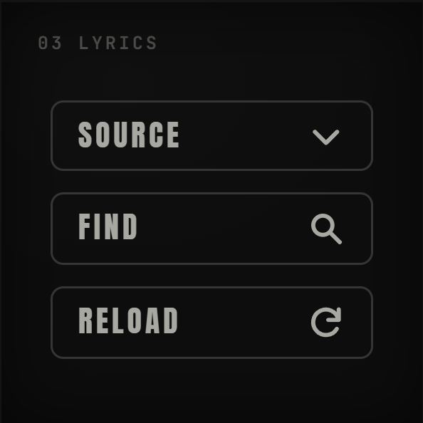
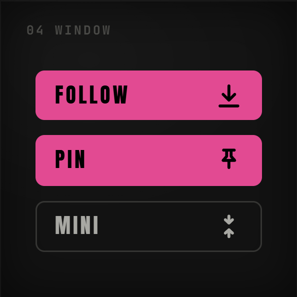
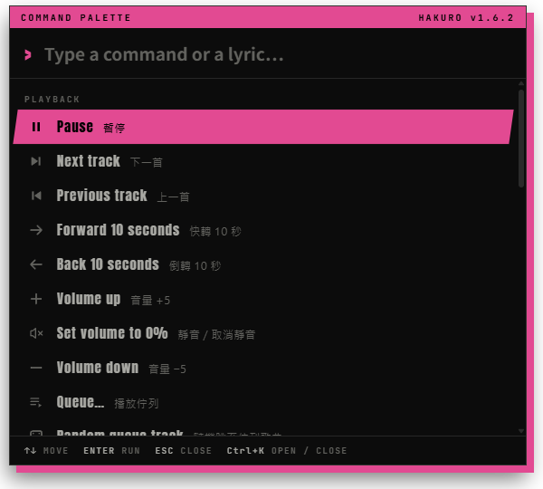

原文與譯文，一起看。
來源有提供翻譯時，譯文依時間戳顯示在對應歌詞下方。從指令面板切換顯示；Hakuro 不會自行翻譯，也不會硬套無法對齊的文字。
依歌曲來源提供Hakuro 跟隨你正在使用的播放器。同步高亮、逐字呈現與翻譯，依歌曲來源提供的內容顯示；找對的歌詞，也會留在本機，下次繼續用。
有同步時間就跟隨播放；提供逐字資料時，連當下的字也能看見。
切換歌詞來源，或用 Find lyrics 搜尋、預覽，再綁定這首歌。
調整強調色、歌詞大小與透明度，讓桌面保有自己的樣子。
播放、音量、時間與工具，
各有自己的一面。





點擊專輯封面切換播放／暫停。游標移到封面，左右兩側會出現上一首與下一首；拖動封面則會旋轉方塊。
CLICK TO PLAY · DRAG TO TURN以 App 實際方塊面製作的操作示意。滑過、聚焦或點選亮點查看說明；拖動可旋轉。此網頁不會控制播放器。
切換精簡模式，讓一顆沒有背景的方塊陪你工作。需要歌詞時再展開，三行歌詞就出現在封面旁；置頂，讓喜歡的句子留在視線裡。
從看懂一句歌詞，到讓視窗不打擾工作，
把常用的細節，調成你的習慣。
來源有提供翻譯時，譯文依時間戳顯示在對應歌詞下方。從指令面板切換顯示；Hakuro 不會自行翻譯，也不會硬套無法對齊的文字。
依歌曲來源提供快速來回旋轉方塊，放開後觸發設定的動作。在 Settings → Cube gestures → Shake action 選任一指令面板動作，或不綁定。新設定預設為 Random queue track，升級保留原有選擇。
可用動作依播放器而定按 Ctrl+K 開啟指令面板，用中英文搜尋功能，或輸入歌詞跳到那一行。常用指令可以自訂快捷鍵，也能設定在其他程式中生效。
Ctrl + K
視窗置頂時可使用滑鼠穿透：關閉、切換至其他視窗時自動穿透，或總是穿透。按 Ctrl+Alt+P 切換穿透，隨時取回操作。
Ctrl + Alt + P用 PIN 將 Hakuro 置頂，切換程式時也能看見。精簡模式置頂後，方塊邊緣會亮起強調色；搭配歌詞展開，保留剛好的存在感。
PIN / 置頂方塊下的小方塊跟隨 Windows 預設播放裝置的實際聲音波動。完整與精簡模式可分別開關，強度可調 10–200%，預設 100%。只在本機分析，不錄音、不上傳。
遠端播放沒有本機聲音時不會波動；減少動態效果時不擷取聲音下載並開啟 Hakuro → Settings → Player。
選一個播放器，照著下方步驟完成連線。
到 Spotify Developer Dashboard ↗ 取得自己的 App Client ID，並設定 Redirect URI：http://127.0.0.1:8787/callback
在 Hakuro 選擇 Spotify，將 ID 填入 Spotify Client ID 後儲存。只填 ID，回呼網址請勿改成 localhost。
依提示在瀏覽器完成授權，再到 Spotify 播放音樂。帳號與 App 資格請參考 Spotify 官方說明 ↗。
Spotify 的佇列跳轉、隨機與循環需要 Premium；部分控制亦受帳號及播放裝置支援限制。
安裝 ytmdesktop ↗，在 Settings → Integrations 開啟 Companion server 與 Enable companion authorization。
在 Hakuro 的 Player 選擇 YouTube Music (ytmdesktop)，然後儲存。本機 Companion API 使用埠 9863。
核對 Hakuro 顯示的四位數字，在 ytmdesktop 授權視窗中於 30 秒內核准，接著開始播放。
支援可直接點播的佇列、Shuffle queue 與循環。ytmdesktop 和 ytmdesktop2 是不同專案，請選擇你安裝的版本。
安裝 ytmdesktop2 ↗，在 Settings → API & Integrations → API 開啟 API，預設埠為 13091。
在 Hakuro 選擇 YouTube Music (ytmdesktop2)。若更改過埠號，填入 ytmdesktop2 API port 後儲存。
若已啟用 Require authorization，請在 30 秒內到 API & Integrations → Authentication 核准 Hakuro。
支援播放、換歌、進度與音量控制。此播放器的佇列僅顯示曲名，無法點播，也不提供隨機與循環按鈕。
Windows 桌面應用程式 · 介面為英文